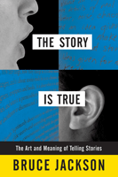

How true stories, almost true stories, urban legends, myths and even outright lies captivate us and bind us together
How true stories, almost true stories, urban legends, myths and even outright lies captivate us and bind us together


 How true stories, almost true stories, urban legends, myths and even outright lies captivate us and bind us together
How true stories, almost true stories, urban legends, myths and even outright lies captivate us and bind us together

|  |
The Story Is TrueThe Art and Meaning of Telling StoriesBruce Jacksonpaper EAN: 978-1-59213-607-0 (ISBN: 1592136079) |
"Jackson's goal is to deconstruct the stories, to determine what is true about them, why and how they work, how they differ from reality, and how and why they are central to our everyday experiences�[W]riting with breakneck energy, he consistently entertains...Happily, Jackson's opinions, even those that annoy, make for good reading."
—Publishers Weekly
Making and experiencing stories, remembering and retelling them is something we all do. We tell stories over meals, at the water cooler, and to both friends and strangers. But how do stories work? What is it about telling and listening to stories that unites us? And, more importantly, how do we change them-and how do they change us?
In The Story Is True, author, filmmaker, and photographer Bruce Jackson explores the ways we use the stories that become a central part of our public and private lives. He examines, as no one before has, how stories narrate and bring meaning to our lives, by describing and explaining how stories are made and used. The perspectives shared in this engaging book come from the tellers, writers, filmmakers, listeners, and watchers who create and consume stories.
Jackson writes about his family and friends, acquaintances and experiences, focusing on more than a dozen personal stories. From oral histories, such as conversations the author had with poet Steven Spender, to public stories, such as what happened when Bob Dylan "went electric" at the 1965 Newport Folk Festival. Jackson also investigates how "words can kill" showing how diction can be an administrator of death, as in Nazi extermination camps. And finally, he considers the way lies come to resemble truth, showing how the stories we tell, whether true or not, resemble truth to the teller.
Ultimately, The Story Is True is about the place of stories-fiction or real-and the impact they have on the lives of each one of us.
Excerpt available at www.temple.edu/tempress
"[Jackson] wants to know how...stories bind people together and what they mean to us. To that end, he offers a close reading of the making of a good story: its ownership, shape, focus, economy, truth, and ending....his book reads like a long tale filled with rich characters and many personal encounters....Jackson is at his most compelling, however, when he tackles �public stories� that have acquired mythlike status....This fascinating book will cause readers to reassess old stories and to be wary of new ones. Highly recommended for academic libraries."
—Library Journal
"Bruce Jackson is a master folklorist, film maker, literary and film critic, and a shameless name-dropper (who has plenty of interesting names to drop). You will never hear a family anecdote-or read a novel, view a film, encounter a news item, follow a jury trial-in quite the same way after reading Bruce Jackson's inspired take on how stories are told and how they work. The Story Is True offers a profound analysis of storytelling in an accessible conversational style. Reading it is like chatting with an expert who explains things in clear understandable language instead of academic jargon. A wonderful read"
—Jan Harold Brunvand, Emeritus Professor of English, University of Utah and author of The Truth Never Stands in the Way of a Good Stor
"Bruce Jackson knows how people tell stories. He knows when they tell them, where, why, and who they tell them to. Better yet, he tells a good story himself. The Story Is True combines the pleasures of narrative with the kick of learning something you didn't know before."
—Howard S. Becker, author of Outsiders and Tricks of the Trade
"[I]ntriguing...If you want to know how O.J. Simpson was found innocent or why newspaper stories appear to make sense but don�t, read this book."
—Virginia Quarterly Review
"To use a clich� not often applied to academic prose, The Story Is True is a page-turner. The deeper you pursue Jackson�s mosaic, the more the individual fragments start to cohere. The book concludes with a poignant meditation on loss and mortality that adds even more emotional weight to Jackson�s theme. This is a book written for everyday readers — people who grew up pretending to be the Lone Ranger, people who got sucked into the O.J. Simpson trial, people who face life in a world haunted by 9/11 and the war that followed. It�s a book for anyone who wants to know why, as Joan Didion famously put it, �We tell ourselves stories in order to live.�"
—Buffalo Spree
"[Jackson�s book has] a lot of provocative intelligence. You cannot know as much as Bruce Jackson does and have thought so long and hard about the human need for narrative and the human uses of it (and have discussed it with so many exceptional people) without producing a book of some fascination and edification�A hugely stimulating�book."
—The Buffalo News
"[T]he way we tell the stories of our lives says a great deal about how we lend order and meaning to our existence. Bruce Jackson deftly and playfully demonstrates this concept in The Story Is True. Jackson himself has an undeniably interesting stock of autobiographical material...and how lucky for his reader. Each time he dips into his personal history, he emerges, with the aplomb of a seasoned storyteller, to offer up some tiny gem that he uses to refract and reflect his ideas about the nature and necessity of storytelling."
—Rain Taxi
�Jackson has [a] significant point to make, which is that stories have as much, if not more, to do with the listener than the teller.....[The Story Is True] makes a number of other fascinating points, not the least of which is that the role of stories, in any society, is to help its members make sense of the world, to bind them together more closely and pass on social and cultural values�.Jackson has produced a thought-provoking and readable book.�
—The Times Higher Education Supplement
"A folklorist and filmmaker as well as a professor, Jackson relates how stories originate, are told and embellished, and thus how definitions of what is true or not vary, depending on the situation and the teller of the story�.Throughout, Jackson emphasizes the importance of story telling (even �news� stories) in daily life."
—Communication Booknotes Quarterly
"[Jackson] analyzes with remarkable clarity the differences between the way things actually happen in the world and the way they are reconceived and manipulated in a storytelling arena, whether that arena is a work of fiction, a courtroom, a dinner table or the halls of government....All make for entertaining reading, apart from their contributions to the book�s arguments."
—Artvoice
"[T]he author explores qualities good stories evidence�context, listeners, revisions, artistic sensibility, shapes, reconstructions, endings, frames, and so on. Jackson�s masterful analyses of these abstractions about narratives tend to fade into the background as Jackson�s own storytelling prowess comes into play�These are entertaining and accessible stories, and this book is a good read. Highly Recommended."
—Choice
�Jackson articulates a struggle to understand stories beyond the information they convey. How, he asks, do stories convey what is unspeakable, and how do stories end being about far more than the experiences they describe?....Jackson�s book is informative the way legend is informative�. Without question [The Story Is True] advances our understanding of personal experience narrative.�
—Journal of Folklore Research
"[A] thoughtful examination of story and storytelling.... It is a brilliant mobilization of storycraft to illuminate aspects of the storyteller's art and the nature of story itself.... The Story Is True is a delight to read. Bruce Jackson has written an enjoyable and entertaining book that is grounded in solid theory and mature observation. Students of narrative will find much insight in the stories told here by this master storyteller. For those who choose to read deeper, an expanded understanding of humanity's most intimate workings is in store."
—Voices
"This is a delightful book. Jackson is not only a great storyteller he also has the ability to make his points with ease and insight by telling stories from our shared repertoire of stories.... Jackson has a chapter on James Agee and Walker Evans and their Let Us Now Praise Famous Men that is a sensitive reading of that marvelous book and the story of its genesis and life. That plus his detailed report of the Bob Dylan myth makes this paperback well worth its price. Jackson's book is fun to read and is easily accessible to the general reader."
—Metapsychology Online Reviews
"A great interdisciplinary master, Bruce Jackson delves into the nature of story in this collection.... Jackson's book is a work every oral historian should read. It shows how stories inform many disciplines, oral history among them. Reading this book, oral historians will come to a greater comprehension of the range of the types of narrative they elicit. In doing so, they will also develop a greater sophistication in distinguishing oral history from other kinds of narratives."
—Oral History Review
"Though written in a popular mode, The Story Is True does not sacrifice rigor of thought and analysis to entice and entertain. This is a serious work of scholarship that uses direct examples and personal narratives to make stories and storytellers an accessible topic for study and reflection across disciplines and for general readers. Jackson is a masterful storyteller and this book is so enjoyable to read."
—Western Folklore
"Throughout the book, the author is a formidable presence, major character in the stories he is presenting...The writing style is warm, lucid, and informal--at all times humane and accessible.... This book could be the sort of introductory classroom text that turns students of narrative into enthusiasts."
—The Journal of American Folklore
Acknowledgements
Introduction
Part I. Personal Stories
1. Telling Stories
2. The Fate of Stories
3. The True Story of Why Stephen Spender Quit the Spanish Civil War
4. The Stories People Tell
5. Acting in the Passive, or, Somebody Got Killed but Nobody Killed�Anybody
6. The Story of Chuck
7. Commanding the Story
Part II. Public Stories
8. Stories That Don�t Make Sense
9. The Real O. J. Story
10. Bob Dylan and the Legend of Newport 1965
11. Silver Bullets
12. The Deceptive Anarchy of Let Us Now Praise Famous Men
13. Words to Kill By
Part III. The Story is True
14. The Storyteller I Looked for Every Time I Looked for Storytellers
15. Farinata's Silence
Notes
Index
 | Bruce Jackson is SUNY Distinguished Professor and Samuel P. Capen Professor of American Culture, University at Buffalo. He is the author of more than 20 other books, a documentary filmmaker and photographer. The French government named him Chevalier in L'Ordre des Arts et des Lettres, France's highest honor in the arts and humanities. |
American Studies
Mass Media and Communications
Cultural Studies
© 2015 Temple University. All Rights Reserved. This page: http://www.temple.edu/tempress/titles/1897_reg.html.